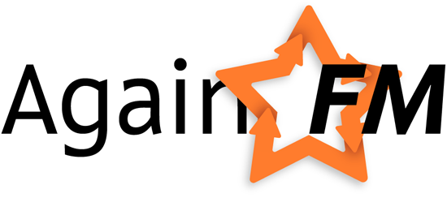

Дорогой друг! Вместо этого
пидарастического текста совсем скоро,
ХЗ месяца 2011 года, появится
охуенный сервис, который позволит тебе удобно слушать твои любимые радиостанции,
с Веркой Сердючкой и Димой Биланом, а также сохранять понравившиеся песни одним кликом, не отрываясь от
половой ебли и важных дел.
Чем же наш сервис будет отличаться от говна подобных? Во-первых мы не жлобы ебанные, и не будем захламлять каждый пустой и не очень уголок дебильной рекламой про увеличение члена. Честно говоря, мы люто, бешенно, ее ненавидим, так что рекламы у нас нахуй не будет. Во-вторых мы сделаем пиздатый и удобный пользовательский интерфейс, нарисуем дизайн, от которого все кончат, и прикрутим эту ебанную авторизацию через социальные сети (модняво, хули!).
А назовем мы все это
безобразие Again.FM
(всегда ваш, капитан очевидность), у нас уже есть
твиттер (следуй
блять за нами!) и
Фэйсбук (добавляйте в друзья,
а то получите поебукнижкой), в которых мы обязательно известим вас
и тебя персонально, читающий исходник, я тебя запомнил!!! о запуске. Еще
сами не знаем нахуя, но есть почта:
mail@again.fm мы ее иногда проверяем.
Эту страницу придумал и сделал
Роман Золоторевич (инфа 100%), он же занимается интерфейсом и дизайном,
а еще бухает по черному между делом. А создатель и разработчик
всей этой херни Юра Невский.